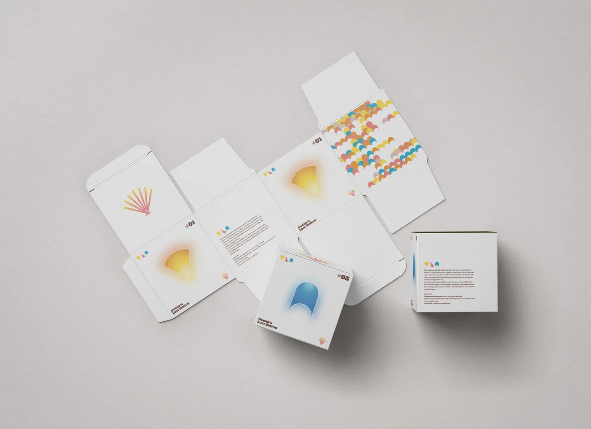
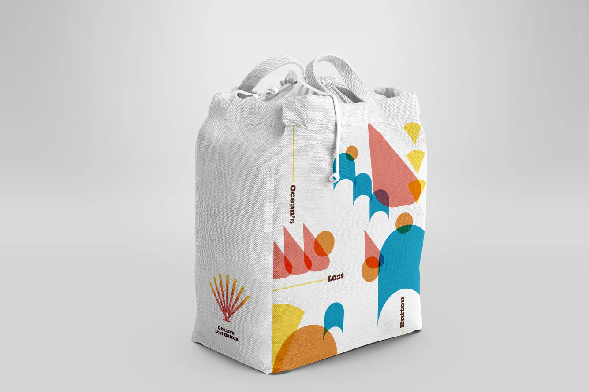
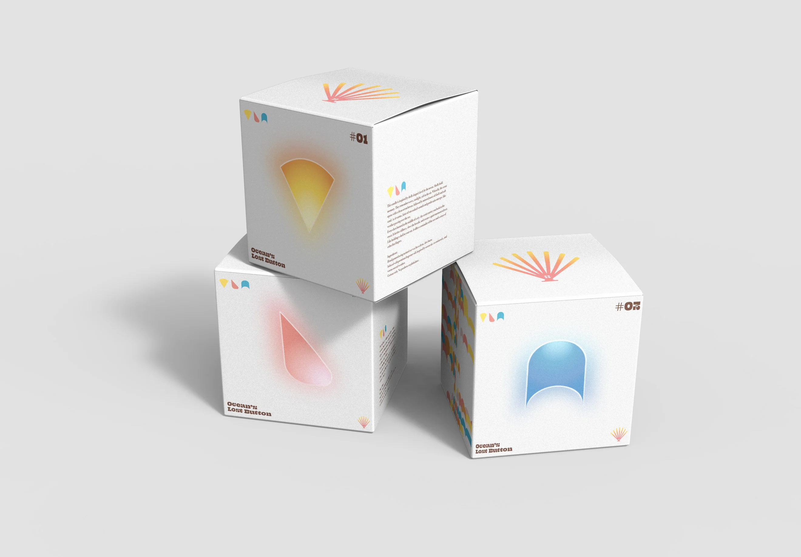

Ocean’s Lost Button
Branding and packaging for a scented candle.
Branding
Packaging Design
Year
2026
Description
This project explores how scent can function as memory through a branding and package design system for Ocean’s Lost Button. The concept begins with the shell as both subject and structure. Shaped by time and water, shells carry traces of the ocean even when removed from it. Rather than depicting shells literally, their underlying qualities such as curvature, segmentation, and radial expansion were abstracted into a modular visual language. This system informed form, color, and layout across the packaging, allowing the shell to exist as a flexible graphic structure. Gradients and warm color transitions were used to mimic the way candlelight diffuses through wax, emphasizing glow as a central visual and sensory element. The restrained composition and generous white space give the light and scent room to unfold quietly. The text included on the candle box frames the candle as a vessel of memory, suggesting that even when lit in an urban environment, it can recall the atmosphere of the sea and create a moment of calm and stillness.
A Candle That Holds the Sea
Express the brand of a scented candle, and the memory its scent carries, through the form of a shell.
The Shell as a System
The shell’s curvature, segmentation, and radial expansion become a modular visual language, with gradients that mimic candlelight through wax.

CANDLE BOX
Rather than depicting shells literally, their qualities became a flexible graphic structure.

